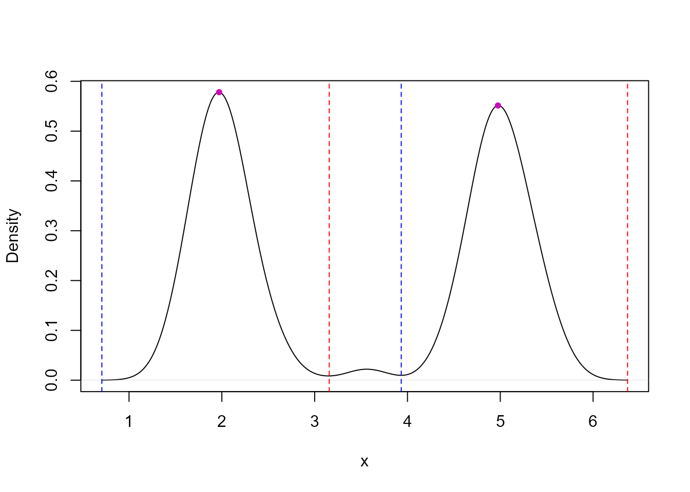
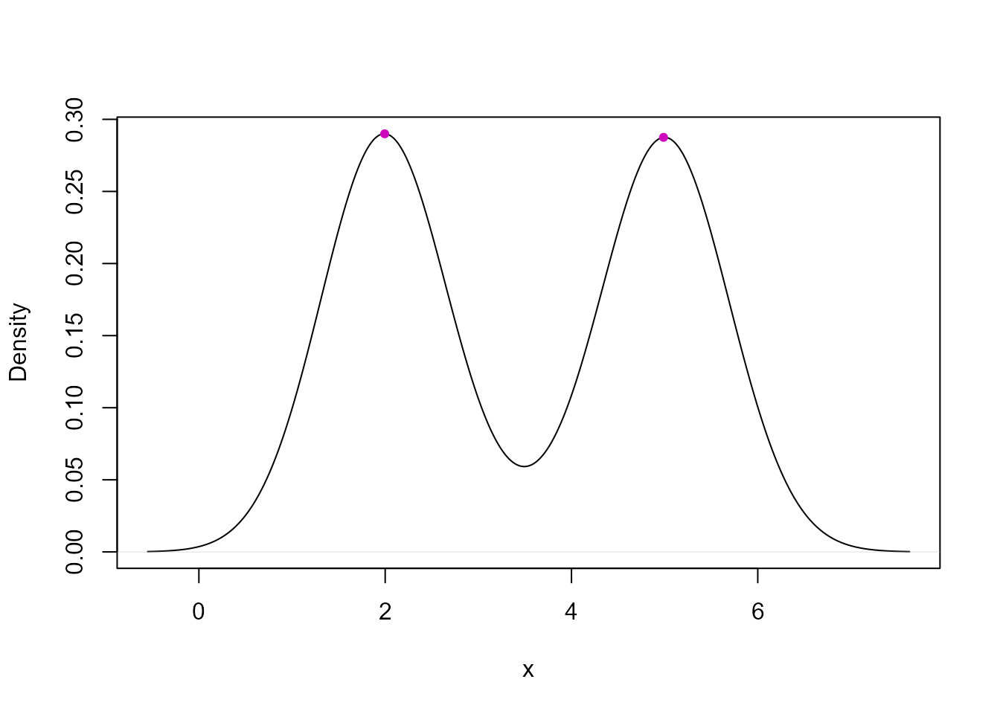
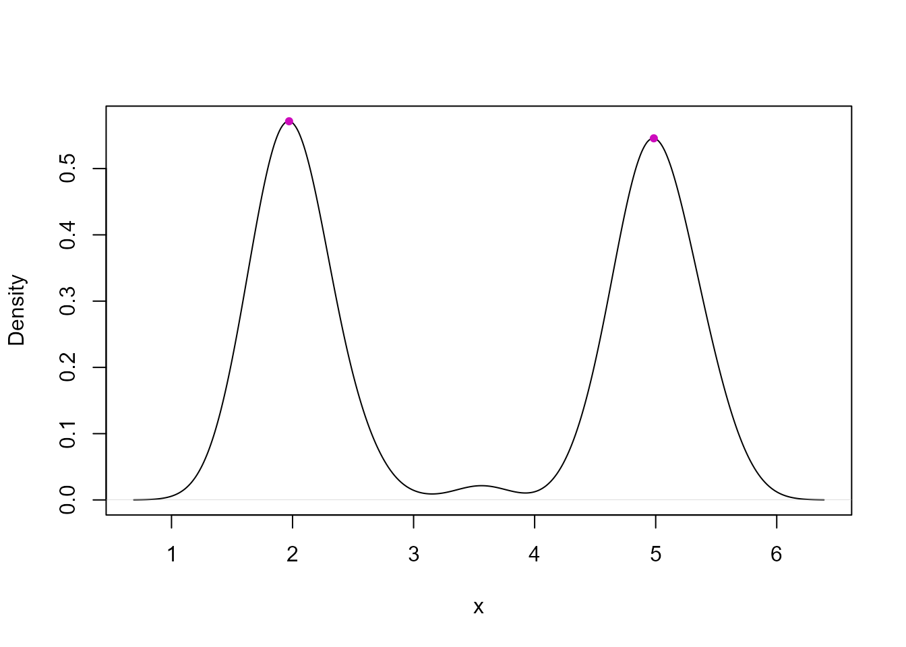
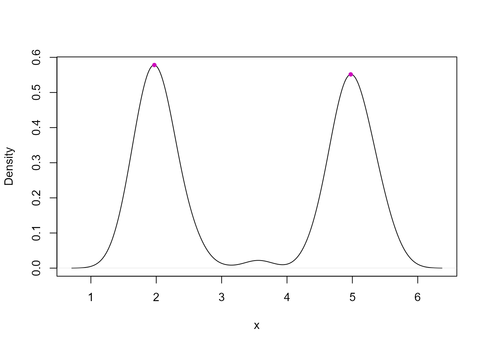

Detects modes in a numeric dataset using kernel density estimation and determines an approximate interval associated with each detected mode.
Arguments
- x
Numeric vector containing the data.
- bw
Bandwidth used for kernel density estimation. By default,
"nrd0"selects the bandwidth automatically. A positive numeric value or another method supported bystats::density()can also be supplied.- adjust
Positive numeric factor used to adjust the bandwidth. Values greater than 1 increase smoothing, whereas values below 1 decrease smoothing. Default is
1.- q1
Numeric value between 0 and 1 specifying the density quantile used to retain the most relevant peaks. Default is
0.95.- plot
Logical. If
TRUE, the estimated density and detected modes are plotted. Default isTRUE.- showRanges
Logical. If
TRUE, vertical dashed lines indicating the left and right endpoints associated with each detected mode are added to the plot. Default isFALSE.
Value
Numeric matrix with one row per detected mode and three columns: left, mode,
and right. The left and right columns contain the endpoints of the
approximate interval associated with each mode, while mode contains the
location of the corresponding local maximum of the estimated density.
Details
The density of x is estimated using stats::density(). By default, the
bandwidth is selected automatically using the "nrd0" method. The adjust
parameter allows the bandwidth to be increased or decreased without changing
the selection method.
Local maxima are identified by comparing each density value with its immediate neighbours.
Peaks are retained only when their estimated density is greater than the
quantile specified by q1. For each retained peak, the function searches
toward both sides while the density decreases away from the peak, defining
an approximate interval associated with the mode.
The location of each detected mode corresponds to the X coordinate of the local maximum of the estimated density.
The number and location of detected modes depend on the bandwidth. Smaller bandwidths may detect more local peaks, whereas larger bandwidths produce smoother density estimates and may merge nearby modes.
Examples
set.seed(123)
x <- c(
rnorm(200, mean = 2, sd = 0.3),
rnorm(5, mean = 3.5, sd = 0.1),
rnorm(200, mean = 5, sd = 0.3)
)
# Detect modes using automatic bandwidth selection
modes <- findModes(x, q1 = 0.5, showRanges = TRUE)

modes
#> left mode right
#> mode1 0.068849 1.984073 3.505386
#> mode2 3.491802 4.999532 7.009838
# Increase the smoothing
findModes(x, adjust = 1.5, q1 = 0.5)

#> left mode right
#> mode1 -0.5503512 1.994703 3.515333
#> mode2 3.4993268 4.987944 7.629038
# Decrease the smoothing
findModes(x, adjust = 0.5, q1 = 0.5)

#> left mode right
#> mode1 0.6880492 1.971411 3.165495
#> mode2 3.9243518 4.984520 6.390638
# Specify a fixed bandwidth
findModes(x, bw = 0.2, q1 = 0.5)

#> left mode right
#> mode1 0.7072493 1.970884 3.156928
#> mode2 3.9328437 4.974788 6.371437